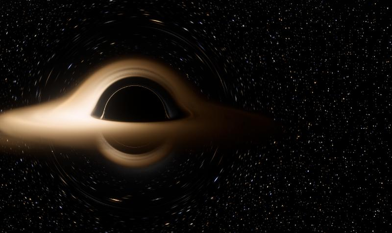
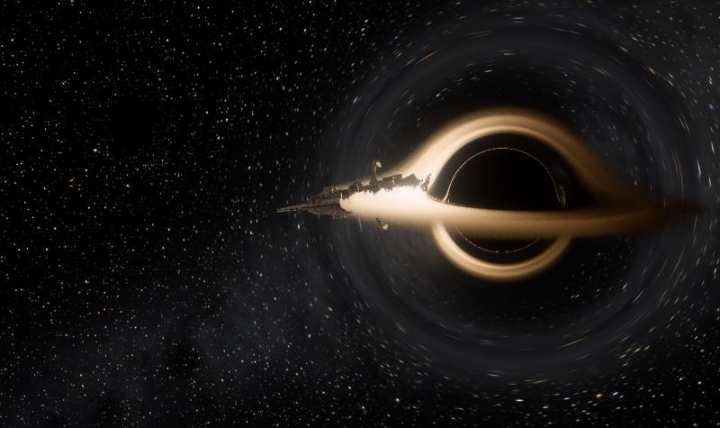
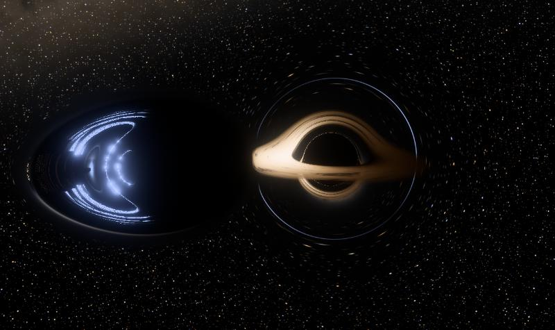

01
Event Horizon
Fly around a black hole, still or spinning. Every pixel’s light is traced along its real path, with Doppler beaming and gravitational redshift on the disk.
Launch →
02
The Recomposition
A mothership climbs back out of a black hole and reassembles. It’s real spaghettification: 2,016 pieces, each falling on its own orbit, played backward.
Launch →
03
Warp Strike
A warp bubble as big as the black hole comes at it faster than light. You see it twice, once flying forward and once flying backward, because it outruns its own light.
Launch →